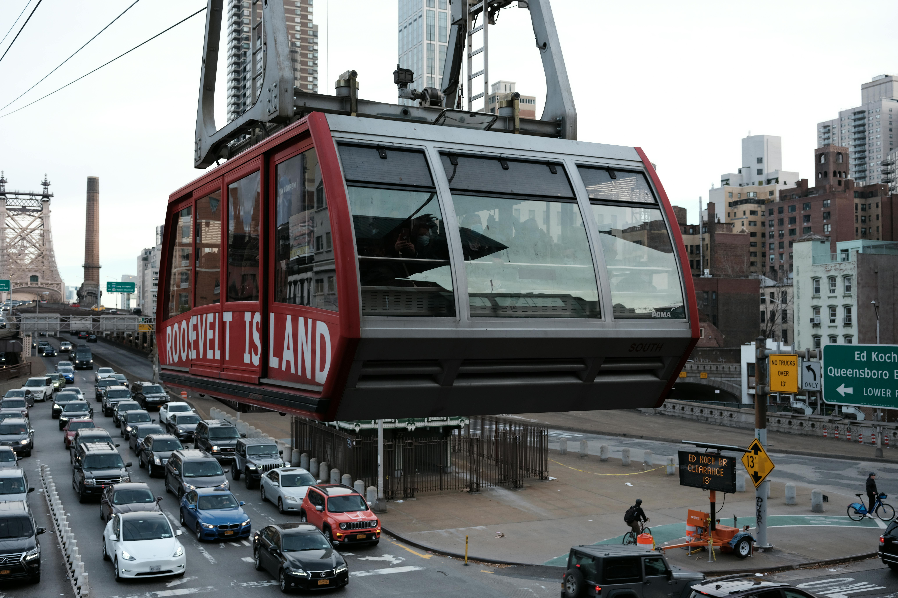

Built
The tramway opened in May 1976 as the first commuter aerial tramway in the United States. It carries passengers roughly 3,140 feet across the East River, offering views of Manhattan's East Side, Roosevelt Island, and Queens.

Photo by Raphael Loquellano
The Roosevelt Island Tramway is an aerial cable car that spans the East River, connecting Manhattan's Upper East Side with Roosevelt Island.
The tramway opened in May 1976 as the first commuter aerial tramway in the United States. It carries passengers roughly 3,140 feet across the East River, offering views of Manhattan's East Side, Roosevelt Island, and Queens.
Today, the tramway serves as both a transportation link and a tourist attraction. It accepts MetroCards and OMNY. The approximately four-minute ride runs every 7.5 to 15 minutes between the Manhattan station near Second Avenue and East 60th Street and Roosevelt Island.
To board from Manhattan, go to the tram station at Second Avenue and East 60th Street.